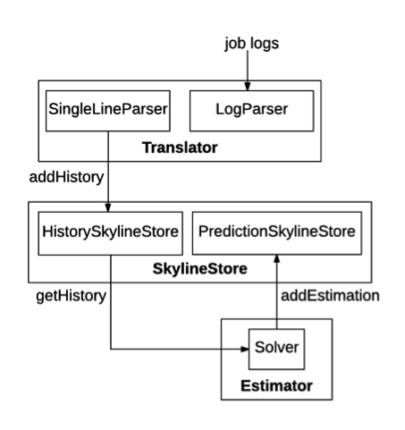
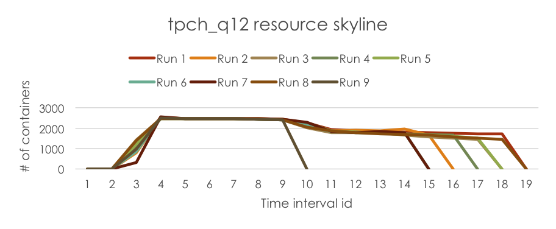
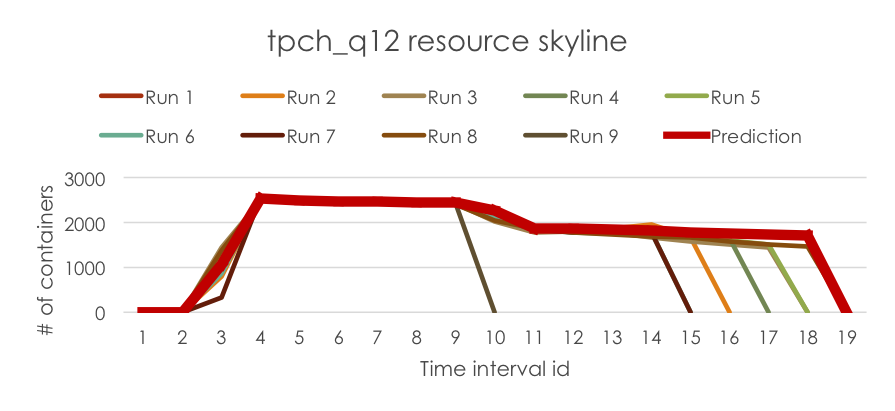

Estimating job resource requirements remains an important and challenging problem for enterprise clusters. This is amplified by the ever-increasing complexity of workloads, i.e. from traditional batch jobs to interactive queries to streaming and recently machine learning jobs. This results in jobs relying on multiple computation frameworks such as Tez, MapReduce, Spark, etc., and the problem is further compounded by sharing nature of the clusters. Current state-of-art solution relies on user expertise to make resource requirement estimations for the jobs (for e.g.: number of reducers or container memory size, etc.), which is both tedious and inefficient.
Based on the analysis of our cluster workloads, we observe that a large portion of jobs (more than 60%) are recurring jobs, giving us the opportunity to automatically estimate job resource requirements based on job’s history runs. It is worth noting that jobs usually come from different computation frameworks, and the version may change across runs as well. Therefore, we want to come up with a framework agnostic black-box solution to automatically make resource requirement estimation for the recurring jobs.
The following figure illustrates the implementation architecture of the resource estimator.

Hadoop-resourceestimator mainly consists of three modules: Translator, SkylineStore and Estimator.
ResourceSkyline is used to characterize job’s resource utilizations during its lifespan. More specifically, it uses RLESparseResourceAllocation (https://github.com/apache/hadoop/blob/b6e7d1369690eaf50ce9ea7968f91a72ecb74de0/hadoop-yarn-project/hadoop-yarn/hadoop-yarn-server/hadoop-yarn-server-resourcemanager/src/main/java/org/apache/hadoop/yarn/server/resourcemanager/reservation/RLESparseResourceAllocation.java) to record the container allocation information. RecurrenceId is used to identify a specific run of a recurring pipeline. A pipeline could consist of multiple jobs, each has a ResourceSkyline to characterize its resource utilization.Translator parses the job logs, extracts their ResourceSkylines and stores them to the SkylineStore. SingleLineParser parses one line in the log stream and extract the ResourceSkyline. LogParser recursively parses each line in the log stream using SingleLineParser. Note that logs could have different storage formats, so LogParser takes a stream of strings as input, instead of File or other formats. Since job logs may have various formats thus require different SingleLineParser implementations, LogParser initiates the SingleLineParser based on user configuration. Currently Hadoop-resourceestimator provides two implementations for SingleLineParser: NativeSingleLineParser supports an optimized native format, and RMSingleLineParser parses the YARN ResourceManager logs generated in Hadoop systems since RM logs are widely available (in production deployments).SkylineStore serves as the storage layer for Hadoop-resourceestimator and consists of 2 parts. HistorySkylineStore stores the ResourceSkylines extracted by the Translator. It supports four actions: addHistory, deleteHistory, updateHistory and getHistory. addHistory appends new ResourceSkylines to the recurring pipelines, while updateHistory deletes all the ResourceSkylines of a specific recurring pipeline, and re-insert new ResourceSkylines. PredictionSkylineStore stores the predicted RLESparseResourceAllocation generated by the Estimator. It supports two actions: addEstimation and getEstimation.
Currently Hadoop-resourceestimator provides in-memory implementation for the SkylineStore.
Estimator predicts recurring pipeline’s resource requirements based on its history runs, stores the prediction to the SkylineStore and makes recurring resource reservations to YARN (YARN-5326). Solver reads all the history ResourceSkylines of a specific recurring pipeline, and predicts its new resource requirements wrapped in RLESparseResourceAllocation. Currently Hadoop-resourceestimator provides a LPSOLVER to make the prediction (the details of the Linear Programming model can be find in the paper). There is also a BaseSolver to translate predicted resource requirements into ReservationSubmissionRequest which is used by different solver implementations to make recurring resource reservations on YARN.ResourceEstimationService wraps Hadoop-resourceestimator as a micro-service, which can be easily deployed in clusters. It provides a set of REST APIs to allow users to parse specified job logs, query pipeline’s history ResourceSkylines, query pipeline’s predicted resource requirements and run the SOLVER if the prediction does not exist, delete the ResourceSkylines in the SkylineStore.This section will guide you through the usage of resource estimator service.
Here let $HADOOP_ROOT represent the Hadoop install directory. If you build Hadoop yourself, $HADOOP_ROOT is hadoop-dist/target/hadoop-$VERSION. The location of the resource estimator service, $ResourceEstimatorServiceHome, is $HADOOP_ROOT/share/hadoop/tools/resourceestimator. It contains 3 folders: bin, conf and data. Please note that users can use resource estimator service with the default configurations.
bin contains the running scripts for the resource estimator service.
conf: contains the configuration files for the resource estimator service.
data contains the sample log that is used to run the example of resource estimator service.
First of all, copy the configuration file (located in $ResourceEstimatorServiceHome/conf/) to $HADOOP_ROOT/etc/hadoop.
The script to start the estimator is start-estimator.sh.
$ cd $ResourceEstimatorServiceHome $ bin/start-estimator.sh
A web server is started, and users can use the resource estimation service through REST APIs.
The URI for the resource estimator sercive is http://0.0.0.0, and the default service port is 9998 (configured in $ResourceEstimatorServiceHome/conf/resourceestimator-config.xml). In $ResourceEstimatorServiceHome/data, there is a sample log file resourceEstimatorService.txt which contains the logs of tpch_q12 query job for 2 runs.
parse job logs: POST http://URI:port/resourceestimator/translator/LOG_FILE_DIRECTORYSend POST http://0.0.0.0:9998/resourceestimator/translator/data/resourceEstimatorService.txt. The underlying estimator will extract the ResourceSkylines from the log file and store them in the jobHistory SkylineStore.
query job's history ResourceSkylines: GET http://URI:port/resourceestimator/skylinestore/history/{pipelineId}/{runId}Send GET http://0.0.0.0:9998/resourceestimator/skylinestore/history/*/*, and the underlying estimator will return all the records in history SkylineStore. You should be able to see ResourceSkylines for two runs of tpch_q12: tpch_q12_0 and tpch_q12_1. Note that both pipelineId and runId fields support wildcard operations.
predict job's resource skyline requirement: GET http://URI:port/resourceestimator/estimator/{pipelineId}Send http://0.0.0.0:9998/resourceestimator/estimator/tpch_q12, and the underlying estimator will predict job’s resource requirements for the new run based on its history ResourceSkylines, and store the predicted resource requirements to jobEstimation SkylineStore.
query job's estimated resource skylines: GET http://URI:port/resourceestimator/skylinestore/estimation/{pipelineId}Send http://0.0.0.0:9998/resourceestimator/skylinestore/estimation/tpch_q12, and the underlying estimator will return the history resource requirement estimation for tpch_q12 job. Note that for jobEstimation SkylineStore, it does not support wildcard operations.
delete job's history resource skylines: DELETE http://URI:port/resourceestimator/skylinestore/history/{pipelineId}/{runId}Send http://0.0.0.0:9998/resourceestimator/skylinestore/history/tpch_q12/tpch_q12_0, and the underlying estimator will delete the ResourceSkyline record for tpch_q12_0. Re-send GET http://0.0.0.0:9998/resourceestimator/skylinestore/history/*/*, and the underlying estimator will only return the ResourceSkyline for tpch_q12_1.
The script to stop the estimator is stop-estimator.sh.
$ cd $ResourceEstimatorServiceHome $ bin/stop-estimator.sh
Here we present an example for using Resource Estimator Service.
First, we run a tpch_q12 job for 9 times, and collect job’s resource skylines in each run (note that in this example, we only collect “# of allocated containers” information).
Then, we run the log parser in Resource Estimator Service to extract the ResourceSkylines from logs and store them in the SkylineStore. The job’s ResourceSkylines are plotted below for demonstration.

Finally, we run the estimator in Resource Estimator Service to predict the resource requirements for the new run, which is wrapped in RLESparseResourceAllocation (https://github.com/apache/hadoop/blob/b6e7d1369690eaf50ce9ea7968f91a72ecb74de0/hadoop-yarn-project/hadoop-yarn/hadoop-yarn-server/hadoop-yarn-server-resourcemanager/src/main/java/org/apache/hadoop/yarn/server/resourcemanager/reservation/RLESparseResourceAllocation.java). The predicted resource requirement is plotted below for demonstration.

This section will guide you through the configuration for Resource Estimator Service. The configuration file is located at $ResourceEstimatorServiceHome/conf/resourceestimator-config.xml.
resourceestimator.solver.lp.alphaThe resource estimator has an integrated Linear Programming solver to make the prediction (refer to https://www.microsoft.com/en-us/research/wp-content/uploads/2016/10/osdi16-final107.pdf for more details), and this parameter tunes the tradeoff between resource over-allocation and under-allocation in the Linear Programming model. This parameter varies from 0 to 1, and a larger alpha value means the model minimizes over-allocation better. Default value is 0.1.
resourceestimator.solver.lp.betaThis parameter controls the generalization of the Linear Programming model. This parameter varies from 0 to 1. Deafult value is 0.1.
resourceestimator.solver.lp.minJobRunsThe minimum number of job runs required in order to make the prediction. Default value is 2.
resourceestimator.timeIntervalThe time length which is used to discretize job execution into intervals. Note that the estimator makes resource allocation prediction for each interval. A smaller time interval has more fine-grained granularity for prediction, but it also takes longer time and more space for prediction. Default value is 5 (seconds).
resourceestimator.skylinestore.providerThe class name of the skylinestore provider. Default value is org.apache.hadoop.resourceestimator.skylinestore.impl.InMemoryStore, which is an in-memory implementation of skylinestore. If users want to use their own skylinestore implementation, they need to change this value accordingly.
resourceestimator.translator.providerThe class name of the translator provider. Default value is org.apache.hadoop.resourceestimator.translator.impl.BaseLogParser, which extracts resourceskylines from log streams. If users want to use their own translator implementation, they need to change this value accordingly.
resourceestimator.translator.line-parserThe class name of the translator single-line parser, which parses a single line in the log. Default value is org.apache.hadoop.resourceestimator.translator.impl.NativeSingleLineParser, which can parse one line in the sample log. Note that if users want to parse Hadoop Resource Manager (https://hadoop.apache.org/docs/current/hadoop-yarn/hadoop-yarn-site/YARN.html) logs, they need to set the value to be org.apache.hadoop.resourceestimator.translator.impl.RmSingleLineParser. If they want to implement single-line parser to parse their customized log file, they need to change this value accordingly.
resourceestimator.solver.providerThe class name of the solver provider. Default value is org.apache.hadoop.resourceestimator.solver.impl.LpSolver, which incorporates a Linear Programming model to make the prediction. If users want to implement their own models, they need to change this value accordingly.
resourceestimator.service-portThe port which ResourceEstimatorService listens to. The default value is 9998.
For SkylineStore, we plan to provide a persistent store implementation. We are considering HBase to future proof our scale requirements.
For Translator module, we want to support Timeline Service v2 as the primary source as we want to rely on a stable API and logs are flaky at best.
Job resource requirements could vary across runs due to skewness, contention, input data or code changes, etc. We want to design a Reprovisioner module, which dynamically monitors job progress at runtime, identifies the performance bottlenecks if the progress is slower than expectation, and dynamically adjusts job’s resource allocations accordingly using ReservationUpdateRequest.
When Estimator predicts job’s resource requirements, we want to provide the confidence level associated with the prediction according to the estimation error (combination of over-allocation and under-allocation), etc.
For Estimator module, we can integrate machine learning tools such as reinforcement learning to make better prediction. We can also integrate with domain-specific solvers such as PerfOrator to improve prediction quality.
For Estimator module, we want to design incremental solver, which can incrementally update job’s resource requirements only based on the new logs.